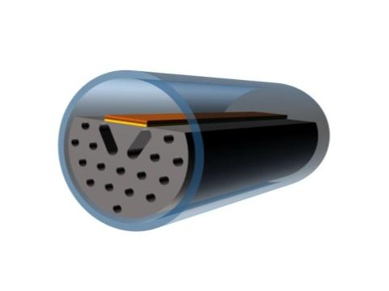
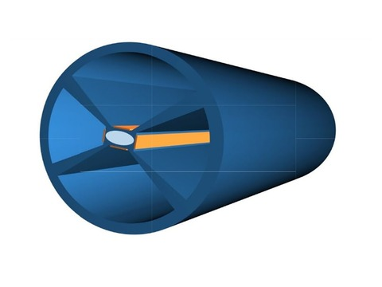
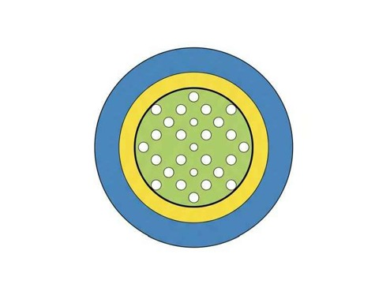
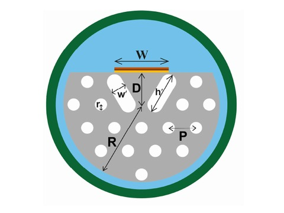
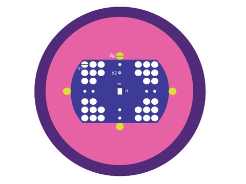

32,142.86nm/RIU for MCF-7 cells
Cancer cell detection
Malignant cells have a slightly higher refractive index than healthy ones. I design label-free fiber sensors that separate the two for skin, cervical, blood, adrenal and breast cancer lines.
Lecturer, EECE, MIST
EEE Graduate, KUET
M.Sc. student, EEE, BUET
I am a PhD aspirant and research enthusiast passionate about exploring innovative technologies and advancing research in Optics and Photonics.

DLC 9 nm, TiO2 25 nm, Au 70 nm Core mode Air holes, r = 2 µmDrag to rotate
Choose a cell line and sweep the wavelength. At resonance, light leaves the core for the gold film and the loss peaks.
Peak wavelengths, sensitivity and resolution from Table II of Paul et al., IEEE Sensors Journal, 2025. Curve shapes are schematic and film thickness is exaggerated.
I am a graduate in Electrical and Electronic Engineering from Khulna University of Engineering & Technology (KUET), currently serving as a Lecturer in the Department of Electrical, Electronic and Communication Engineering (EECE) at the Military Institute of Science and Technology (MIST) and pursuing my M.Sc. in EEE at Bangladesh University of Engineering and Technology (BUET). I am an enthusiastic researcher and PhD aspirant with a strong passion for academia, teaching, mentoring, and advancing knowledge through meaningful research.
My research interests primarily focus on optical fiber sensors, plasmonic sensors, and biosensors, with particular emphasis on photonic crystal fiber-based surface plasmon resonance (SPR) sensors, plasmonic biosensing, nanophotonics, and advanced photonic engineering for sensing applications.
My research vision centers on exploring and developing innovative photonic sensing technologies with potential applications in biomedical sensing, environmental monitoring, healthcare, and other emerging technological fields.
I am actively seeking PhD opportunities in Optics and Photonics, with research interests spanning Silicon Photonics, Nonlinear Optics, Biosensors, Nanophotonics, Optical Sensors, and Advanced Semiconductor Devices. I am particularly interested in exploring innovative photonic devices, nanostructured materials, light–matter interactions, and advanced optical sensing technologies, with the goal of contributing to cutting-edge research and technological advancements in photonics and optoelectronics.
32,142.86nm/RIU for MCF-7 cells
Malignant cells have a slightly higher refractive index than healthy ones. I design label-free fiber sensors that separate the two for skin, cervical, blood, adrenal and breast cancer lines.
150,000nm/RIU, birefringence peak
Asymmetric fibers can be read twice, from the confinement loss peak and from the lower birefringence peak. Two independent readings of one sample improve selectivity.
R² = 0.97predicted against simulated
Taguchi orthogonal arrays tune film thickness and fiber geometry together. A regression model then predicts sensitivity without another simulation.
IEEE Sensors Journal 2025 Q1
A flat-polished fiber with a diamond-like carbon, TiO2 and gold film that detects six cancer cell types, and works as a general sensor for refractive indices from 1.00 to 1.401.
Papervol. 25, no. 21, pp. 39802–39810

Discover Sensors 2026 Open access
An elliptical germanium-doped core hangs between four analyte channels. One fiber supports both confinement loss and birefringence readout over refractive indices from 1.00 to 1.44.
Papervol. 2, no. 1, p. 14

IEEE QPAIN 2026
Leaving selected holes out of a 27-hole lattice forms two diamond-shaped cores. A 30 nm gold coating gives sharp, well separated resonances for six cancer cell types.
Paperpp. 1–6

IEEE ICTP 2025
A Taguchi L27 array optimizes five design parameters in 27 simulations. Multiple linear regression then predicts sensitivity for an untested design within 3.82% of simulation.
Paperpp. 26–30

QPAIN 2025
A rectangular core and dual-side polishing split x- and y-polarized light, so gold nanowires can be interrogated by loss and by birefringence.
Paperpp. 1–6
Lecturer, Department of EECE, MIST
November 2025 to present
For PhD openings, collaborations or questions about a paper.